Week 7 Syntax
本週主題
- 句法理論與計算表徵
句法 | Syntax
句法對於 NLP/NLU 很重要，因爲它涉及語言在表層的結構運作。
但是 (形式) 句法在近代語言學發展史中佔據了很大（太大！）的一部分
N.Chomsky 對於語料庫，一直到現在的 LLM 的（鄙視）態度都一樣的，爲什麼呢？ 2012 on corpus linguistics; 2023 on chatGPT
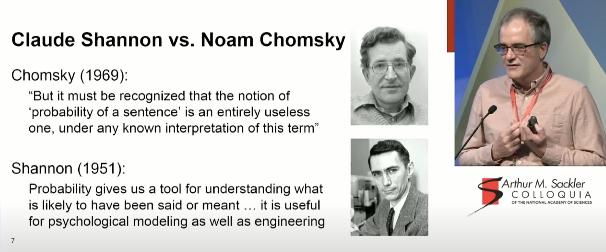
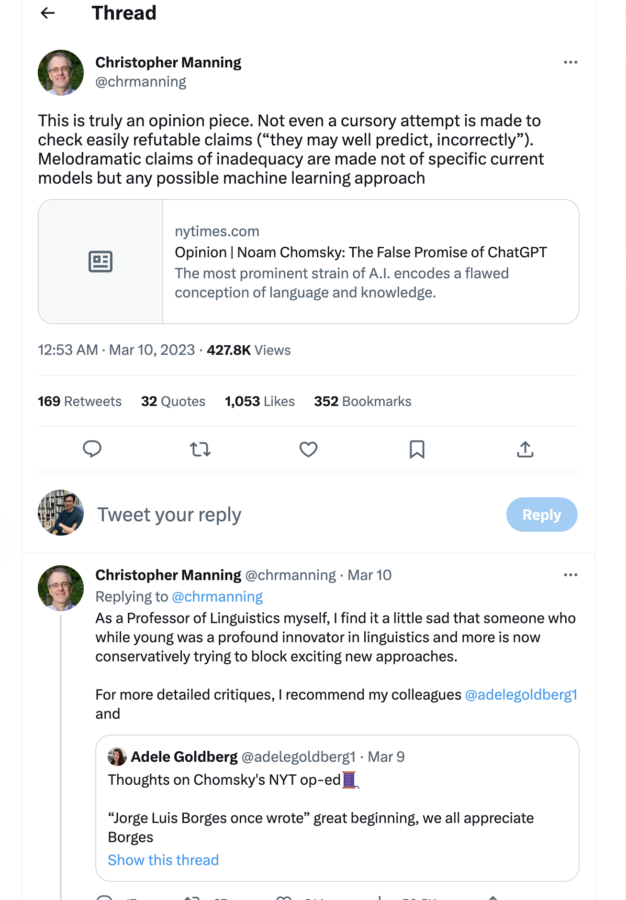
形式句法
Formal syntax/Geneartive Grammar
Theory
- 【句法】是第一順位。In generative grammar, pride of place is given to syntax, 也具備自己的【獨立模組】。
- 【形式觀】：心智中的句法運算可以完全獨立於意義之外。
Data
- top-down，有限規則駕馭無限表達，重點在掌握 competence 而非 performace。
- 內省式語感判斷 rely on introspective judgments as their primary source of data.
- the poverty-of-stimulus hypothesis (“the child has no data”).
句法的計算表徵
兩種在計算語言學上常使用的句法表徵 (representation)：
- dependency
- constituency Defining Constituency
- syntactic constituency is a syntactic unit that is a maximal projection of a syntactic category.
- syntactic category is a set of words that share a common syntactic property.
- N 的 maximal project 是 NP，V 是 VP，PP 是 PP，等等。
從世界語言來看，這個概念是很值得爭議的。
Modeling constituency
目前最爲廣泛用來 model constituency 的形式系統叫做 Context-free Grammar (CfG)， 在語言學中稱 Phrase Structure Grammar (PSG) 。
由 Chomsky 在 1950 年代提出，是一種用來描述語言句法結構的形式系統。
Context-free Grammar
a set of rules (or productions) that describe how to construct a sentence from smaller units.
形式上定義，CfG 是一個四元組 (4-tuple) \((N, \Sigma, R, S)\)，其中：
- \(N\) 是一個有限集合，稱為 non-terminal symbols，代表句法結構的組成部分。
- \(\Sigma\) 是一個有限集合，稱為 terminal symbols，代表句子中的詞。
- \(R\) 是一個有限集合，稱為 rules，代表句法結構的生成規則。
- \(S\) 是一個 \(N\) 中的元素，稱為 start symbol，代表句子的根節點。
例子
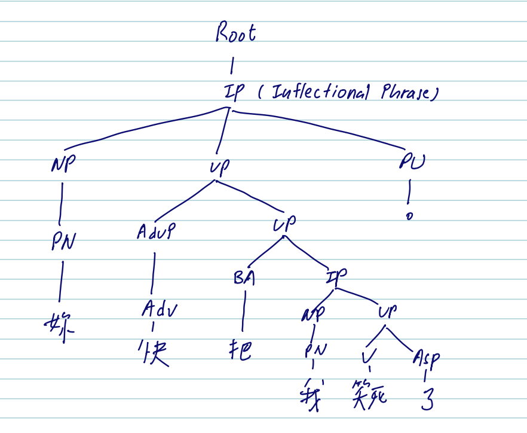
如何解析以下句子？
他說的都不對
處理形式上的各種空缺問題
動詞的論元脫落有不同的符碼標記
- 移位 (那個蘋果，我扔了)
- 隱含（她打算打網球）
- 空格（他買了兩根香蕉，給了他朋友一根）
Parsing
句法剖析
- (自動地) 把一個句子 (a string of word) 映射到其對應的句法結構 (a parse tree)，就叫做 parsing。
Treebanks
- 一個 treebank 是一個語料庫，其中的每個句子都有一個對應的句法樹 (parse tree)。
- 這些句法樹通常是由訓練過的語言學家標註、或修訂過的。
- Penn Treebank
- CKIP Treebank
例子
Formal language and Chomsky normal form
It is useful to have a normal from (i.e., each of the production/rule taks a particular form) for formal languages, so that we can compare different formal languages and their grammars.
Chomsky normal form (CNF) is a normal form for context-free grammars.
- A grammar is in CNF if all its rules are of the form:
- \(A \rightarrow BC\)
- \(A \rightarrow a\)
- \(S \rightarrow \epsilon\)
- A grammar is in CNF if all its rules are of the form:
- Chomsky-adjunction
Structural Ambiguity
結構歧義
一個句子的句法結構可能有多種不同的解析方式，這就是結構歧義 (structural ambiguity)。
最常見的結構歧義類型：附加 (attachment ambiguity) 和並列 (coordination ambiguity)。
I shot an elephant in my pajamas
練習中文歧義句
\(VP + NP_{1} + de + NP_{2}\)
\(A + NP_{1} + NP_{2}\)
剖析演算法
CKY Parsing algorithms
Dynamic Programming
Evaluation
Defining dependencies
由法國語言學家 Lucien Tesnière 提出。
對於語序較爲自由的、構詞豐富的 (morphologically rich languages) 語言，rule-based approach 很難應付。(以 polymorphic languages 爲例)
此外，找到了主要語 (head) 及其依存 (dependent) 有助於語意剖析 (semantic parsing)。（可以容納句法和語意結構並存）
動詞的配價理論
主要語或中心語
來自化學元素的類比：句子像是分子，由原子組成，而原子的核心是配價 (valence) （按一定的價結合在一起）。
動詞是中心，所有成分都是環繞着中心動詞開展的。
價數、價質（
semantic roles）、價形 (syntactic position)
Dependency 的形式定義
一個句子的 dependency tree 是一個有向無環圖，其中每個節點代表一個詞，每個邊代表一個依存關係 (dependency relation)。
依存關係是一個非對稱的二元關係，其中一個元素是 head，另一個元素是 dependent。
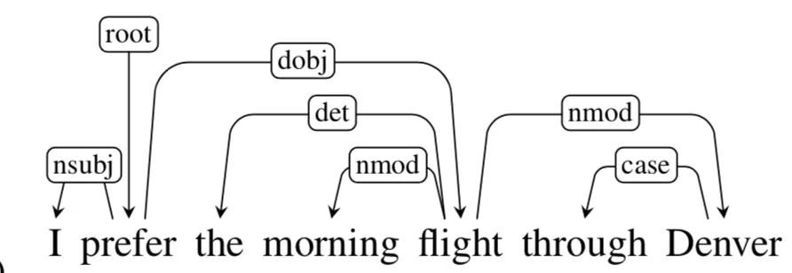
非對稱的關係也帶出了階層的概念，此外，每個元素都可能同時支配與被支配。
幾個概念
Head-Dependent 的箭頭方向：the origin word is the Head and the destination word is Dependent. (e.g., ‘prefer’ is Head & ‘I’ is Dependent.)
Root: Word which is the root of our parse tree. (It is ‘prefer’ in the above example).
Grammar Functions and Arcs: Tags between each Head-Dependent pair is a grammar function determining the relation between the Head & Dependent. The arrowhead carrying the tag is called an Arc.
Dependency relations
- 關係種類有很多分類方式，這裏採取 Universal Dependencies 的分類方式。
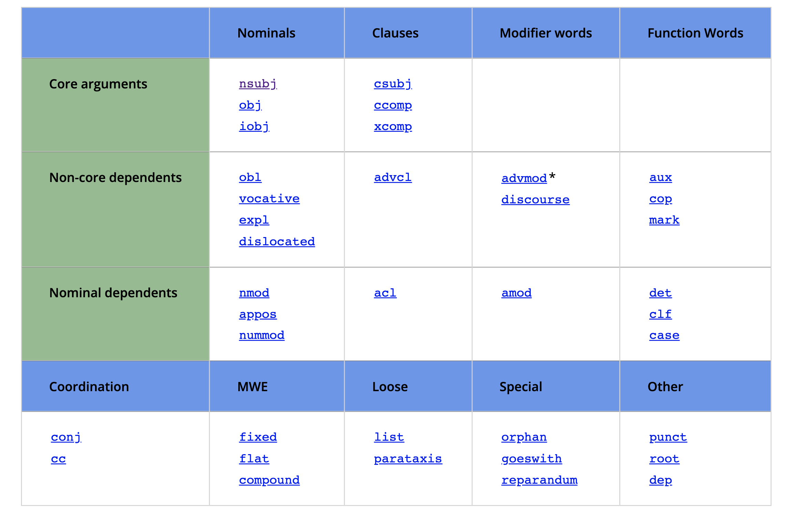
Dependency Formalisms
- 圖論上來看，dependencies can be represented as a directed graph \(G= (V, A)\) where V(set of vertices) represents words (and punctuation marks as well) in the sentence & A( set of arcs) represent the grammar relationship between elements of V.
- A dependency parse tree is the directed graph which has the below features:
- Root 沒有傳入的弧 (incoming arc) (can only be Head in Head-Dependent pair)
- 除了 root 之外的每一個節點，應該都只有一條傳入的弧 (Only one Parent/Head)
- 從 root 到每一個節點都只有一條路。
Projectivity
- Projective arc: An
arc/arrows_with_tagare projective when ‘Head’ associated with the arc has a path to reach each word that lies between ‘Head’ & ‘Dependent’.
以 (18.2) 爲例，the 和 flights 的 arc 是 projective，因爲在此的 Head (即 flights) 到它的 Dependent (即 the) 之間有個 morning 這個詞， Head 也有路可到得了。
同樣地，‘canceled’ (HEAD) 到 ‘flights’ (DEPENDENT) 這條 arc 也是 projective，因爲 Head 有路可到達它和其 Dependent 之間的詞。(i.e., ‘the’ (canceled \(\rightarrow\) flights \(\rightarrow\) the) 以及 ‘morning’ (canceled \(\rightarrow\) flights \(\rightarrow\) morning))
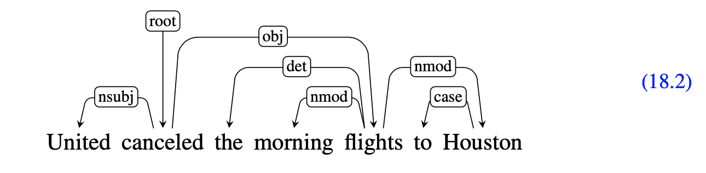
- Projective parse tree: A parse tree with all its arcs projective. The above tree is projective; A tree with at least one of the arcs as non-projective is called non-projective parse tree.
Practice
以下這個 dependency parse tree 是 projective or non-projective? 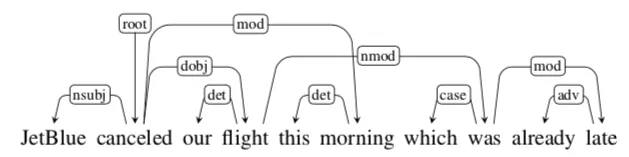
Dependency Treebanks
A dependency treebank is a collection of sentences with their corresponding dependency trees.
UD treebanks are available for 100+ languages.
Dependency Parsing
- Transition-based
- Graph-based
後者較準確，處理長句較好，也能生成 non-projective dependency tree (對於不同於英語的其他類型語言很有幫助)。
Graph-based Dependency Parsing
任務的定義：給定一個句子，找出一個 dependency tree，使得它的分數最高。
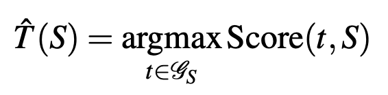
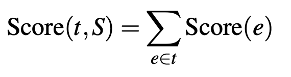
注意：\(y=f(x)\), \(y = maxf(x)\), \(y=argmax f(x)\) 的不同！
Graph-based Dependency Parsing
歸結到兩個問題：
[1] assigning a score to each edge 給邊分數
[2] finding the best parse tree given the scores of all potential edges. 找出最好的依存樹
Chu-Liu/Edmonds’ Algorithm
解 [2] 的方法
It turns out that finding the best dependency parse for \(S\) is equivalent to finding the maximum spanning tree over \(G\).
- Chu-Liu/Edmonds’ Algorithm is a greedy algorithm for finding the maximum spanning tree of a graph.
先要瞭解何謂最大擴張樹 (Maximum Spanning Tree)
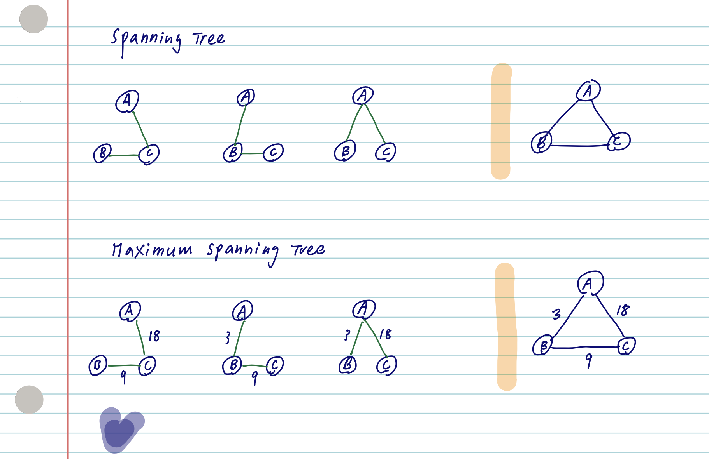
舉例
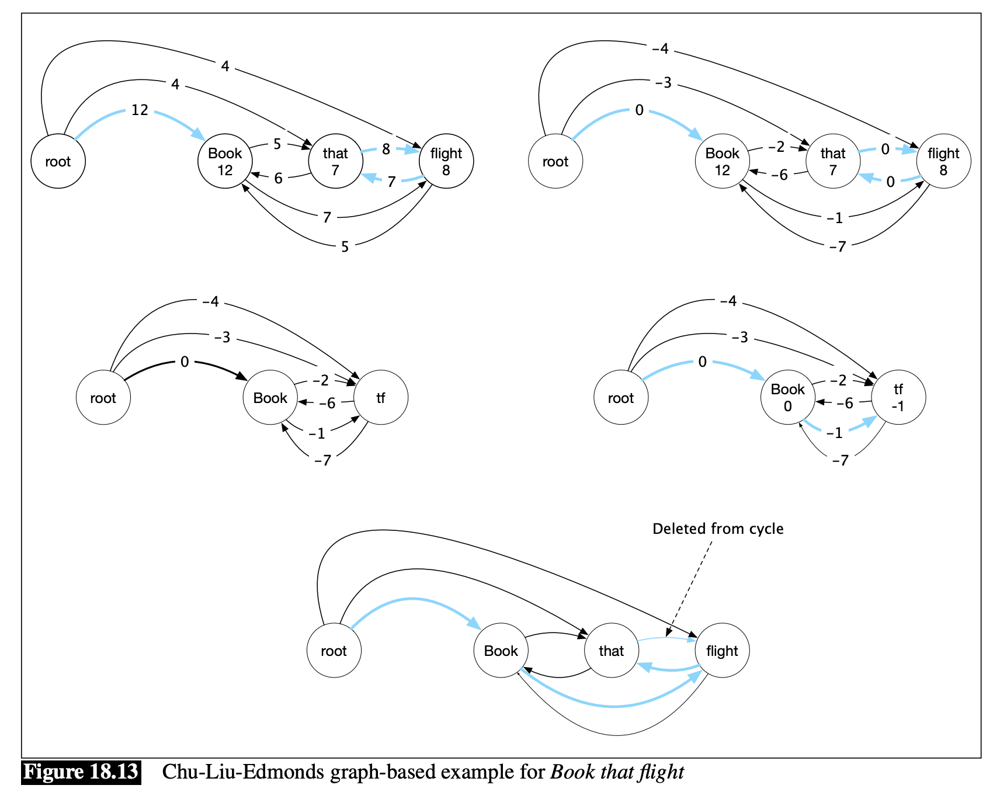
Evaluation
理想上的 exact match 指標是不太可行的。
Labeled Attachment Score (LAS): the ratio of correctly detected Head-Dependent pairs along with their tag / total Head-Dependent pairs in testing data.
Unlabeled Attachment Score (UAS): the ratio of correctly detected Head_Dependent pairs (irrespective of the tag) / total Head-Dependent pairs in testing data.
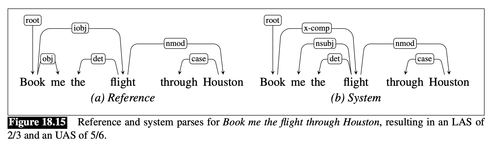
Reference指的是標準答案，System指的是系統生成的答案。Total head-dependent pairs指的是句子中所有的 Head-Dependent pair, 不管在Reference或System都是 6 。Total Head-Dependent pairs correctly detected with tags= 4 (因爲System中的nsubj和det都是正確的)。Total Head-Dependent pairs correctly detected= 5 (因爲只管 pairs，不管 tags，所以 book \(\rightarrow\) flight 也算)。
Dependency Parsing with LLMs
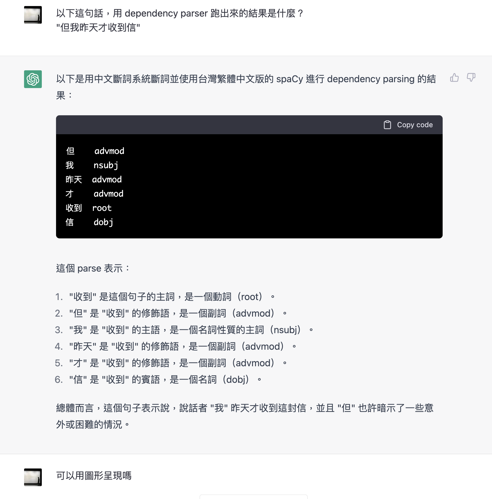
Reflections
- Constituency/Dependency Parsing，強烈預設了動詞爲核心的語言假設，這點需要注意。